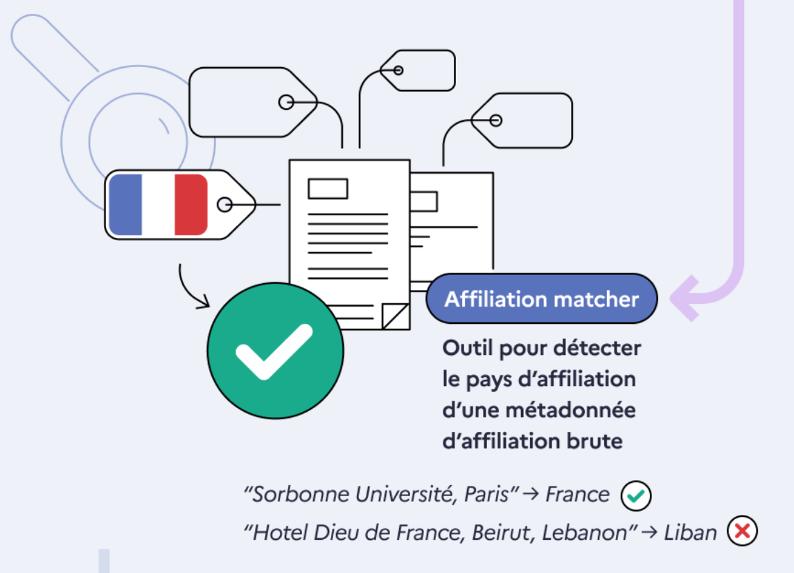
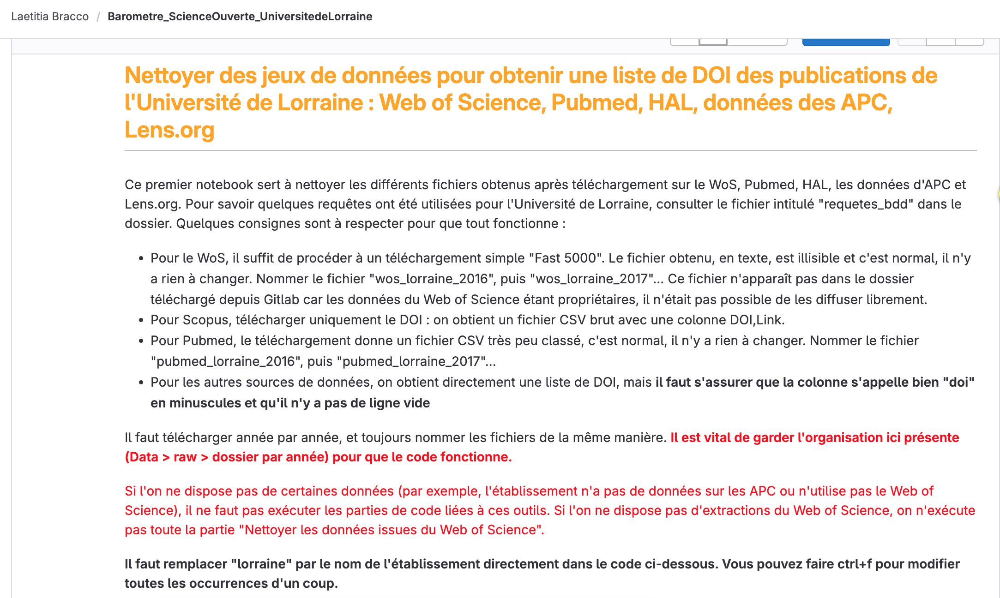
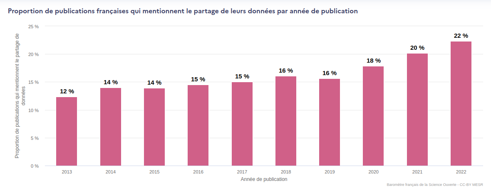
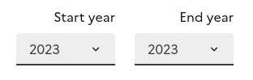

16 mai 2024
Webinaire Club Utilisateurs
Eric Jeangirard, Anne L'Hôte
Dpt. Ingénierie et Sciences des Données / SIES / MESR

Le Baromètre de la Science Ouverte, un outil évolutif
Depuis 2018, le baromètre de la science ouverte s'enrichit de nouveaux objets d'étude:
- üìÑ 2018 : Publications
- üß™ 2020 : Essais cliniques et √©tudes observationnnelles
- üéì 2021 : Th√®ses de doctorat
- üßë‚Äçüíª 2021 : Donn√©es de la recherche et code et logiciels

La définition du corpus de publications est automatique au niveau national, mais pas local
Au niveau national, le corpus est déterminé automatiquement à partir des affiliations brutes moissonnées / scrapées

Mais au niveau institutionnel, le corpus reste à la main de chaque établissement
(plus de 200 déclinaisons locales à ce jour !)
(plus de 200 déclinaisons locales à ce jour !)
Un outil non propriétaire pour les données locales ?
L'université de Lorraine propose une
méthodologie
pour retrouver les publications de son institution / laboratoire

Un outil ne faisant pas appel aux bases propriétaires est-il envisageable ? OpenAlex peut aider mais les alignements automatiques sur RoR sont largement perfectibles.
Au-delà des publications, les jeux de données
üö© Dans les entrep√¥ts des jeux de donn√©es, les m√©tadonn√©es en g√©n√©ral (les affiliations en particulier !) sont peu ou pas renseign√©es
Pour les jeux de données, le Baromètre fournit aujourd'hui des indicateurs basés sur les publications, mais des indicateurs "entrepôts-centriques" sont aussi nécessaires pour le pilotage

Comment aider les établissements à retrouver "leurs" jeux de données déposés dans des entrepôts ?
üß≤ Works Magnet üß≤
Trois cas d'usages
A partir d'une recherche sur les affiliations (RoR ou dans le texte des signatures), les différentes signatures d'affiliations utilisées sont proposées à l'utilisateur, qui peut ensuite les valider ou les exclure. A partir de là, trois cas d'usages principaux sont proposés :
- Corriger les RoR dans OpenAlex
- Etablir un corpus de publications
- Etablir un corpus de jeux de données
Sources mobilisées
On capitalise ici sur le travail précédemment réalisé dans le cadre du baromètre de la science ouverte
- OpenAlex
- Baromètre de la science ouverte
- Métadonnées scrapées à partir du web
- Crossref
- HAL
- Datacite
Des traitements spécifiques aux jeux de données sont réalisés : prise en compte du DOI "principal" uniquement (et pas les DOI de chaque fichier du jeux de données), lien avec le DOI de publication, heuristique basées sur les ORCID croisés avec OpenAlex ...
Fonctionnalités - Recherche
- Champ de recherche par affiliations
- Filtrage par année de publication
- Filtrage par type de production
Fonctionnalités - Recherche
Champ de recherche par affiliations

- Champ pouvant avoir plusieurs valeurs.
- Sont alors ramenées l'ensemble des productions mentionnant au moins l'une de ces affiliations.
- Peut être saisi: un nom (ex: Université de Lorraine ou loria) ...
- ... ou un RoR (ex: https://ror.org/04vfs2w97 ou 04vfs2w97).
Fonctionnalités - Recherche
Champ de recherche par affiliations

Pour chaque RoR saisi,
- Les différents noms et acronymes renseignés dans RoR pour cet identifiant sont automatiquement ajoutés à la recherche.
- Il est possible de retrouver les RoR "enfants" de cet identifiant, ainsi que leurs noms et acronymes pour les ajouter à la recherche.
Fonctionnalités - Recherche
Filtrage par année de publication
- Interval de publication des productions.
- Les années choisies sont incluses.
- Année minimale 2010, année maximale 2024.
- Par défaut, l'année sélectionnée est 2023 dans les 2 cas.
Fonctionnalités - Recherche
Filtrage par type de production
- Possibilité de rechercher des jeux de données seulement.
- Par défaut, la recherche est effectuée sur les publications et les jeux de données.
Fonctionnalités - Action
- üè´ Am√©liorer la correspondance RoR dans OpenAlex
- üìë Retrouver les publications affili√©es √† votre √©tablissement
- üóÉ Retrouver les jeux de donn√©es affili√©s √† votre √©tablissement
Fonctionnalités - Action
üè´ Am√©liorer la correspondance RoR dans OpenAlex
- On sait qu' OpenAlex n'est pas exempt d'erreurs
- Proposition d'une solution technique pour centraliser et uniformiser les demandes de correction
- Voici les corrections demandées jusqu'à présent
- Cas des homonymies (ex: essec)
- Possibilité de modifier, ajouter ou supprimer un RoR pour une affiliation donnée
Fonctionnalités - Action
üìë Retrouver les publications affili√©es √† votre √©tablissement

Fonctionnalités - Action
üìë Retrouver les publications affili√©es √† votre √©tablissement
- Liste des affiliations distinctes rencontrées parmi les productions scientifiques
- Possibilité de rechercher parmi les affiliations
- Action requise de validation ou invalidation de chacune des affiliations trouvées
- Cela provoquera la validation des productions scientifiques se revendiquant de cette affiliation
Fonctionnalités - Action
üìë Retrouver les publications affili√©es √† votre √©tablissement
Booster pour accelérer les validations massives:
- Valider les jeux de données sans affiliation mais liés à une publication rattachée à mon institution
- Valider les jeux de données sans affiliation mais dont au moins 3 auteurs sont détectés comme appartenant à mon institution
Fonctionnalités - Action
üóÉ Retrouver les jeux de donn√©es affili√©s √† votre √©tablissement
- Comme pour les publications, logique de validation ou invalidation des affiliations et donc des jeux de données
- Propostion d'indicateurs concernant les jeux de données validés : distribution du nombre de jeux de données pour chaque année de publication par éditeur, par type